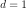
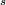
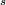
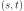
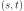
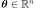
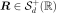
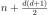

MaternModel¶
(Source code, png, hires.png, pdf)
{kind=link}
{kind=link}

-
class
MaternModel(*args)¶ Matern covariance function.
- Available constructors:
MaternModel(spatialDim=1)
MaternModel(scale, nu)
MaternModel(scale, amplitude, nu)
Parameters: - spatialDim : int
Spatial dimension
 .
When not fulfilled, the input dimension is equal to the size of the parameter
.
When not fulfilled, the input dimension is equal to the size of the parameter  .
By default, equal to 1.
.
By default, equal to 1.- scale : sequence of floats
Scale coefficient
 .
The size of is the input dimension.
.
The size of is the input dimension.- amplitude : sequence of positive floats
Amplitude of the process
 .
Must be of size equal to 1.
By default, equal to .
.
Must be of size equal to 1.
By default, equal to .- nu : float,
Coefficient
 .
.
See also
Notes
The Matern function is a stationary covariance function whith dimension .
We consider the scalar stochastic process , where
 is an event,
is an event,  is a domain of
is a domain of  .
.The Matern function is defined by:
The correlation function
 writes:
writes:Examples
Create a standard Matern covariance function:
>>> import openturns as ot >>> covModel = ot.MaternModel(2) >>> t = [0.1, 0.3] >>> s = [0.2, 0.4] >>> print(covModel(s, t)) [[ 0.974477 ]] >>> tau = [0.1, 0.3] >>> print(covModel(tau)) [[ 0.894994 ]]
Create a Matern covariance function specifying the scale vector and
:>>> covModel2 = ot.MaternModel([1.5, 2.5], 2.3) >>> covModel2bis = ot.MaternModel([1.5]*3, 2.3)
Create a Matern covariance function specifying the scale vector, the amplitude and
:>>> covModel3 = ot.MaternModel([1.5, 2.5], [3.5], 4.5)
Methods
__call__(*args)Evaluate the covariance function. computeAsScalar(*args)Compute the covariance function for scalar model. computeStandardRepresentative(*args)Compute the standard representative function of the covariance model. discretize(*args)Discretize the covariance function on a given mesh. discretizeAndFactorize(*args)Discretize and factorize the covariance function on a given mesh. discretizeAndFactorizeHMatrix(*args)Discretize and factorize the covariance function on a given mesh. discretizeHMatrix(*args)Discretize the covariance function on a given mesh using HMatrix result. discretizeRow(vertices, p)(TODO) draw(*args)Draw a specific component of the covariance model with input dimension 1. getActiveParameter()Accessor to the active parameter set. getAmplitude()Get the amplitude parameter  of the covariance function.
of the covariance function.getClassName()Accessor to the object’s name. getFullParameter()Get the full parameters of the covariance function. getFullParameterDescription()Get the description full parameters of the covariance function. getId()Accessor to the object’s id. getInputDimension()Get the input dimension of the covariance function.getMarginal(*args)Get the ith marginal of the model. getName()Accessor to the object’s name. getNu()Nu accessor. getNuggetFactor()Accessor to the nugget factor. getOutputCorrelation()Get the spatial correlation matrix  of the covariance function.
of the covariance function.getOutputDimension()Get the dimension  of the covariance function.
of the covariance function.getParameter()Get the parameters of the covariance function. getParameterDescription()Get the description of the covariance function parameters. getScale()Get the scale parameter of the covariance function.getShadowedId()Accessor to the object’s shadowed id. getVisibility()Accessor to the object’s visibility state. hasName()Test if the object is named. hasVisibleName()Test if the object has a distinguishable name. isDiagonal()Test whether the model is diagonal or not. isStationary()Test whether the model is stationary or not. parameterGradient(s, t)Compute the gradient according to the parameters. partialGradient(s, t)Compute the gradient of the covariance function. setActiveParameter(active)Accessor to the active parameter set. setAmplitude(amplitude)Set the amplitude parameter of the covariance function.setFullParameter(parameter)Set the full parameters of the covariance function. setName(name)Accessor to the object’s name. setNu(nu)Nu accessor. setNuggetFactor(nuggetFactor)Set the nugget factor for the regularization. setOutputCorrelation(correlation)Set the spatial correlation matrix of the covariance function.setParameter(parameter)Set the parameters of the covariance function. setScale(*args)Set the scale parameter of the covariance function.setShadowedId(id)Accessor to the object’s shadowed id. setVisibility(visible)Accessor to the object’s visibility state. -
__init__(*args)¶ Initialize self. See help(type(self)) for accurate signature.
-
computeAsScalar(*args)¶ Compute the covariance function for scalar model.
- Available usages:
computeAsScalar(s, t)
computeAsScalar(tau)
Parameters: - s, t : sequences of float
Multivariate index

- tau : sequence of float
Multivariate index

Returns: - covariance : float
Covariance.
Notes
The method makes sense only if the dimension of the process is . It evaluates
 .
.In the second usage, the covariance model must be stationary. Then we note
 for
for  as
this quantity does not depend on .
as
this quantity does not depend on .
-
computeStandardRepresentative(*args)¶ Compute the standard representative function of the covariance model.
- Available usages:
computeStandardRepresentative(s, t)
computeStandardRepresentative(tau)
Parameters: - s, t : sequences of float
Multivariate index
- tau : float or sequence of float
Multivariate index
Returns: - rho : float
Correlation model
Notes
It evaluates the scalar function
 or
or
 if the model is stationary.
if the model is stationary.
-
discretize(*args)¶ Discretize the covariance function on a given mesh.
Parameters: - meshOrGrid :
MeshorRegularGrid Mesh or time grid of size
 associated with the process.
associated with the process.
Returns: - covarianceMatrix :
CovarianceMatrix Covariance matrix
 (if the process is of
dimension
(if the process is of
dimension
Notes
This method makes a discretization of the model on meshOrGrid composed of the vertices
 and returns the
covariance matrix:
and returns the
covariance matrix:
- meshOrGrid :
-
discretizeAndFactorize(*args)¶ Discretize and factorize the covariance function on a given mesh.
Parameters: - meshOrGrid :
MeshorRegularGrid Mesh or time grid of size
associated with the process.
Returns: - CholeskyMatrix :
TriangularMatrix Cholesky factor of the covariance matrix
 (if the process is of dimension ).
(if the process is of dimension ).
Notes
This method makes a discretization of the model on meshOrGrid composed of the vertices
thanks to the
discretize method and returns its Cholesky factor.- meshOrGrid :
-
discretizeAndFactorizeHMatrix(*args)¶ Discretize and factorize the covariance function on a given mesh.
This uses HMatrix.
Parameters: - meshOrGrid :
MeshorRegularGrid Mesh or time grid of size
associated with the process.- nuggetFactor: float
Nugget factor to be added to the discretized matrix
- hmatParam :
HMatrixParameters Parameter values for the HMatrix
Returns: - HMatrix :
HMatrix Cholesk matrix
(if the process is of
dimension ), stored in hierarchical format (H-Matrix)
Notes
This method si similar to the discretizeAndFactorize method. This method requires that OpenTURNS has been compiled with the hmat library. The method is helpfull for very large parameters (Mesh, grid, Sample) as its compress data.
- meshOrGrid :
-
discretizeHMatrix(*args)¶ Discretize the covariance function on a given mesh using HMatrix result.
Parameters: - meshOrGrid :
MeshorRegularGrid Mesh or time grid of size
associated with the process.- nuggetFactor: float
Nugget factor to be added to the discretized matrix
- hmatParam :
HMatrixParameters Parameter values for the HMatrix
Returns: - HMatrix :
HMatrix Covariance matrix
 (if the process is of
dimension ), stored in hierarchical format (H-Matrix)
(if the process is of
dimension ), stored in hierarchical format (H-Matrix)
Notes
This method si similar to the discretize method. This method requires that OpenTURNS has been compiled with the hmat library. The method is helpfull for very large parameters (Mesh, grid, Sample) as its compress data.
- meshOrGrid :
-
discretizeRow(vertices, p)¶ (TODO)
-
draw(*args)¶ Draw a specific component of the covariance model with input dimension 1.
Parameters: - rowIndex : int,

The row index of the component to draw. Default value is 0.
- columnIndex: int, :math:`0 leq columnIndex < dimension`
The column index of the component to draw. Default value is 0.
- tMin : float
The lower bound of the range over which the model is plotted. Default value is CovarianceModel-DefaultTMin in
ResourceMap.- tMax : float
The upper bound of the range over which the model is plotted. Default value is CovarianceModel-DefaultTMax in
ResourceMap.- pointNumber : int,

The discretization of the range
![[tMin,tMax]](../../_images/math/28036ec454b57225cb92e6fe676bbe04e263fa36.svg) over which the model is plotted. Default value is CovarianceModel-DefaultPointNumber in class:~openturns.ResourceMap.
over which the model is plotted. Default value is CovarianceModel-DefaultPointNumber in class:~openturns.ResourceMap.- asStationary : bool
Flag to tell if the model has to be plotted as a stationary model, ie as a function of the lag
 if equals to True, or as a non-stationary model, ie as a function of  if equals to False. Default value is True.
if equals to True, or as a non-stationary model, ie as a function of  if equals to False. Default value is True.- correlationFlag : bool
Flag to tell if the model has to be plotted as a correlation function if equals to True or as a covariance function if equals to False. Default value is False.
Returns: - graph :
Graph A graph containing a unique curve if asStationary=True and if the model is actually a stationary model, or containing the iso-values of the model if asStationary=False or if the model is nonstationary.
- rowIndex : int,
-
getActiveParameter()¶ Accessor to the active parameter set.
Returns: - active :
Indices Indices of the active parameters.
- active :
-
getAmplitude()¶ Get the amplitude parameter
of the covariance function.Returns: - amplitude :
Point The amplitude parameter of the covariance function.
- amplitude :
-
getClassName()¶ Accessor to the object’s name.
Returns: - class_name : str
The object class name (object.__class__.__name__).
-
getFullParameter()¶ Get the full parameters of the covariance function.
Returns: - parameter :
Point List the full parameter of the covariance function i.e. scale parameter , the the amplitude parameter , the Spatial correlation parameter
![\mat{R} \in \cS_d^+([-1,1])](../../_images/math/2c8972fb30e580c68239a39fc2abab510d4aab7b.svg) ;
and potential other parameter depending on the model;
;
and potential other parameter depending on the model;
- parameter :
-
getFullParameterDescription()¶ Get the description full parameters of the covariance function.
Returns: - description :
Description Description of the full parameter of the covariance function.
- description :
-
getId()¶ Accessor to the object’s id.
Returns: - id : int
Internal unique identifier.
-
getInputDimension()¶ Get the input dimension
of the covariance function.Returns: - inputDimension : int
Spatial dimension
of the covariance function.
-
getMarginal(*args)¶ Get the ith marginal of the model.
Returns: - marginal : int or sequence of int
index of marginal of the model.
-
getName()¶ Accessor to the object’s name.
Returns: - name : str
The name of the object.
-
getNu()¶ Nu accessor.
Returns: - nu : float,
Coefficient
.
-
getNuggetFactor()¶ Accessor to the nugget factor.
This parameter allows smooth predictions from noisy data. The nugget is added to the diagonal of the assumed training covariance (thanks to discretize) and acts as a Tikhonov regularization in the problem.
Returns: - nuggetFactor : float
Nugget factor used for the regularization of the discretized covariance matrix.
-
getOutputCorrelation()¶ Get the spatial correlation matrix
of the covariance function.Returns: - spatialCorrelation :
CorrelationMatrix Correlation matrix .
- spatialCorrelation :
-
getOutputDimension()¶ Get the dimension
of the covariance function.Returns: - d : int
Dimension
such that  This is the dimension of the process
This is the dimension of the process  .
.
-
getParameter()¶ Get the parameters of the covariance function.
Returns: - parameters :
Point List of the scale parameter and the amplitude parameter of the covariance function.
The other specific parameters are not included.
- parameters :
-
getParameterDescription()¶ Get the description of the covariance function parameters.
Returns: - descriptionParam :
Description Description of the components of the parameters obtained with the getParameter method..
- descriptionParam :
-
getScale()¶ Get the scale parameter
of the covariance function.Returns: - scale :
Point The scale parameter used in the covariance function.
- scale :
-
getShadowedId()¶ Accessor to the object’s shadowed id.
Returns: - id : int
Internal unique identifier.
-
getVisibility()¶ Accessor to the object’s visibility state.
Returns: - visible : bool
Visibility flag.
-
hasName()¶ Test if the object is named.
Returns: - hasName : bool
True if the name is not empty.
-
hasVisibleName()¶ Test if the object has a distinguishable name.
Returns: - hasVisibleName : bool
True if the name is not empty and not the default one.
-
isDiagonal()¶ Test whether the model is diagonal or not.
Returns: - isDiagonal : bool
True if the model is diagonal.
-
isStationary()¶ Test whether the model is stationary or not.
Returns: - isStationary : bool
True if the model is stationary.
Notes
The covariance function
 is stationary when it is invariant by
translation:
is stationary when it is invariant by
translation:
We note
for .
-
parameterGradient(s, t)¶ Compute the gradient according to the parameters.
Parameters: - s, t : sequences of float
Multivariate index
.
Returns: - gradient :
Matrix Gradient of the function according to the parameters.
-
partialGradient(s, t)¶ Compute the gradient of the covariance function.
Parameters: - s, t : floats or sequences of float
Multivariate index
.
Returns: - gradient :
Matrix Gradient of the covariance function.
-
setActiveParameter(active)¶ Accessor to the active parameter set.
Parameters: - active : sequence of int
Indices of the active parameters.
-
setAmplitude(amplitude)¶ Set the amplitude parameter
of the covariance function.Parameters: - amplitude :
Point The amplitude parameter to be used in the covariance function. Its size must be equal to the dimension of the covariance function.
- amplitude :
-
setFullParameter(parameter)¶ Set the full parameters of the covariance function.
Parameters: - parameter :
Point List the full parameter of the covariance function i.e. scale parameter , the the amplitude parameter , the Spatial correlation parameter
;
and potential other parameter depending on the model;Must be at least of dimension .
- parameter :
-
setName(name)¶ Accessor to the object’s name.
Parameters: - name : str
The name of the object.
-
setNu(nu)¶ Nu accessor.
Parameters: - nu : float,
Coefficient
.
-
setNuggetFactor(nuggetFactor)¶ Set the nugget factor for the regularization.
Acts on the discretized covariance matrix.
Parameters: - nuggetFactor : float
nugget factor to be used for the regularization of the discretized covariance matrix.
-
setOutputCorrelation(correlation)¶ Set the spatial correlation matrix
of the covariance function.Parameters: - spatialCorrelation :
CorrelationMatrix Correlation matrix
.
- spatialCorrelation :
-
setParameter(parameter)¶ Set the parameters of the covariance function.
Parameters: - parameters :
Point List of the scale parameter and the amplitude parameter of the covariance function.
Must be of dimension
 .
.
- parameters :
-
setScale(*args)¶ Set the scale parameter
of the covariance function.Parameters: - scale :
Point The scale parameter to be used in the covariance function. Its size must be equal to the input dimension of the covariance function.
- scale :
-
setShadowedId(id)¶ Accessor to the object’s shadowed id.
Parameters: - id : int
Internal unique identifier.
-
setVisibility(visible)¶ Accessor to the object’s visibility state.
Parameters: - visible : bool
Visibility flag.